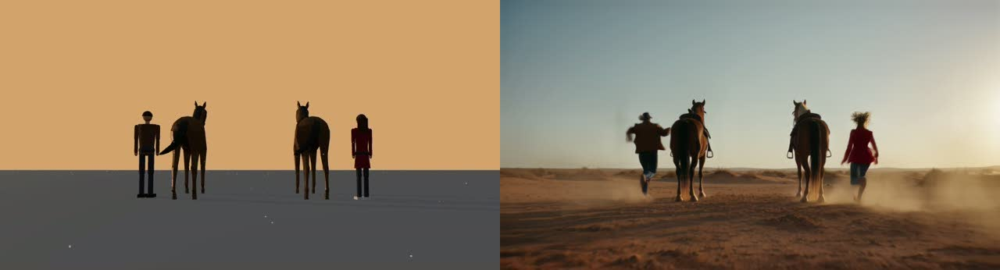
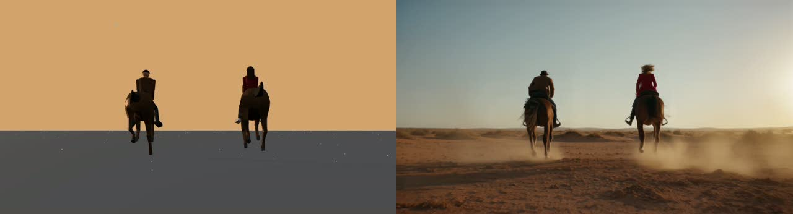

Soundstage — try the stage
Plan a film scene in 3D: who goes where, how the camera moves, how it's lit. Inside ComfyUI, Soundstage turns that plan into photoreal video that keeps your exact framing and timing. This page is the 3D planning stage on its own, running in your browser: no install, nothing is generated here.


Selected:
View
Camera
Shots
Lens
Shot cam shows what each shot films; dragging there re-aims that shot at the playhead (Undo puts it back). Use Free view to look around without changing a shot. Drag empty space to orbit, Shift+drag to pan, wheel to dolly. Drag a person onto a horse or car to mount it; drag a small prop onto a person to hand it over. Space plays, arrow keys step frames.
Steps 2–5: what ComfyUI made from this scene
Step 1 is the stage above. These are the real renders from Soundstage running in ComfyUI on a GPU: nothing here is generated in your browser.